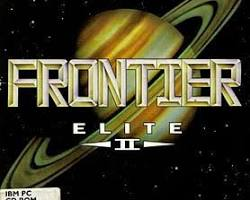
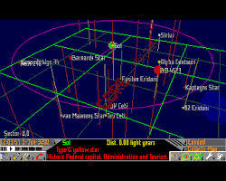
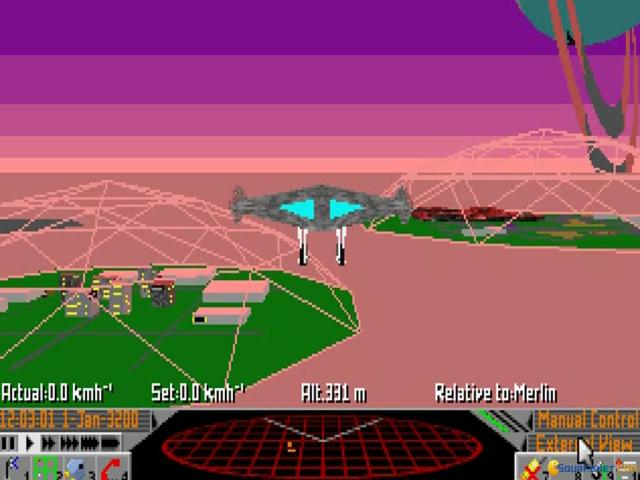
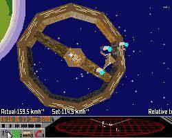
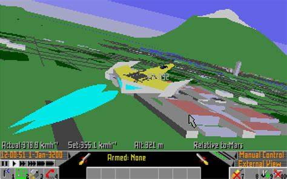
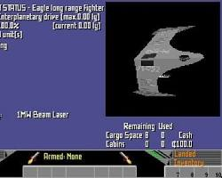

Frontier: Elite II

Frontier: Elite II is a space trading and combat simulator video game written by David Braben and published by GameTek and Konami in October 1993. It is the first sequel to the seminal game Elite from 1984, and retains the same principal component of Elite, namely open-ended gameplay, while adding realistic physics and an accurately modelled galaxy.
Firsts
- First game to feature procedurally generated star systems.
- First game to have real-sized planets, where cities could be viewed from orbit.
- First to use curved surfaces (Bezier).
- The only game to do a palette-fit every frame to get best use of colours (Amiga and ST only).
- Apart from First Encounters and Elite: Dangerous, is the only piece of software (games or otherwise) that attempts to simulate our entire galaxy.
Programming



The game was programmed in 68000 assembly language by David Braben.
Playing in 2023
To play Frontier: Elite II in 2023, you can use the DOSBox emulator.
- Download and install DOSBox from the official website.
- Create a new folder on your computer and name it something like “Frontier”.
- Copy the contents of your Frontier: Elite II game CD into this new folder.
- Open DOSBox and type `mount c ` to mount the folder you created in step 2.
- Type `c:` to switch to the C drive.
- Type `cd elite2` to navigate to the game’s directory.
- Type `elite2` to start the game.

